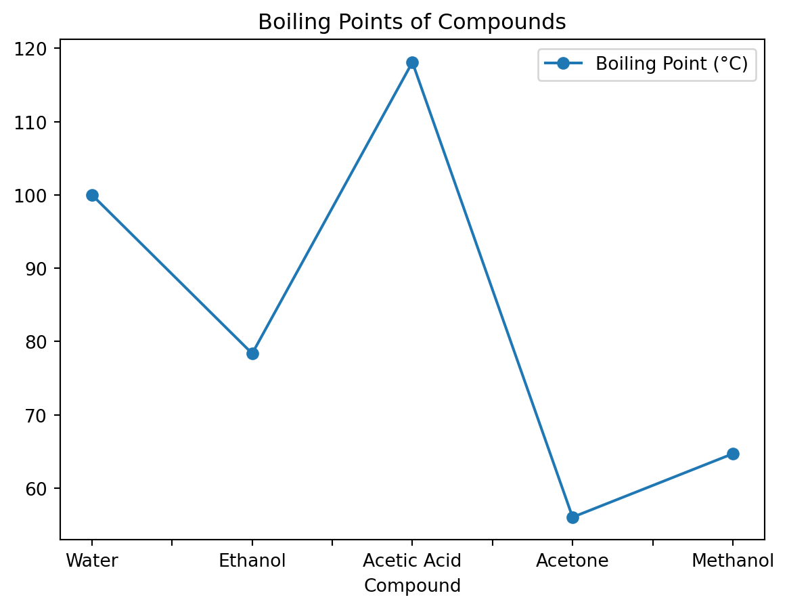
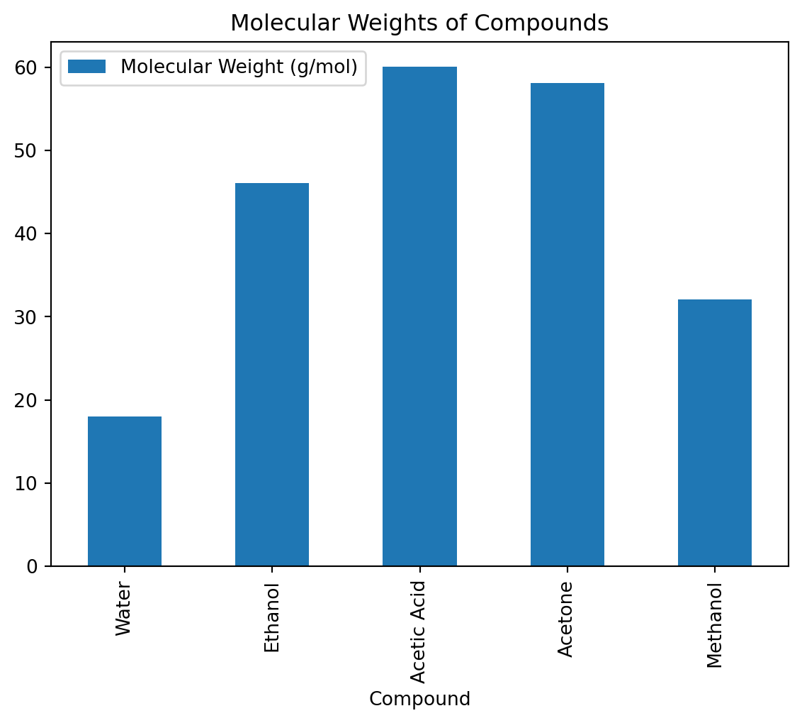

import pandas as pd
import numpy as npPandas
Pandas is a powerful library for data manipulation and analysis in Python, making it a valuable tool for chemists looking to process experimental data, chemical properties, or any structured data related to their research. It’s like the Excel spreadsheets in Python.
Setting Up Your Environment
First, ensure you are in a conda environment. You can then install Pandas and Numpy using pip:
pip install pandas numpyor
pip install pandas
pip install numpyImporting Libraries
Start your Python script or Jupyter notebook by importing Pandas and Numpy:
Creating a Series
A Series in pandas is one of the core data structures in the Python pandas library. It represents a one-dimensional array-like object containing a sequence of values and an associated array of data labels, called its index. The Series can hold any data type—integers, strings, floating point numbers, Python objects, and so on. It’s similar to a column in a spreadsheet or a table in a database.
compounds = pd.Series(["Water", "Ethanol", "Glucose", "Sodium Chloride", "Methane"])
compounds0 Water
1 Ethanol
2 Glucose
3 Sodium Chloride
4 Methane
dtype: objectCreating a DataFrame
A DataFrame is a two-dimensional, size-mutable, potentially heterogeneous tabular data structure with labeled axes (rows and columns). For a chemistry application, let’s consider a simple example where we have a dataset of several compounds with their molecular weights and melting points.
data = {
"Compound": ["Water", "Ethanol", "Glucose", "Sodium Chloride", "Methane"],
"Molecular Weight": [18.015, 46.07, 180.16, 58.44, 16.04],
"Melting Point (°C)": [0, -114.1, 146, 801, -182.5]
}
df = pd.DataFrame(data)Basic Data Inspection
Pandas provides numerous functions to quickly inspect your data:
df.head()displays the first few rows of the DataFrame.df.describe()gives a statistical summary of the numerical columns.df.dtypesshows the data type of each column.
Accessing Data
You can access specific columns using their labels:
mw = df["Molecular Weight"]Or use conditions to filter data:
solids = df[df["Melting Point (°C)"] > 25]Indexing
In pandas, .loc and .iloc are indexing operators used for selecting data from a DataFrame. While both are used for data selection, they differ in how they perform the selection:
.locis label-based, meaning you use the labels of the rows and columns to select data..ilocis integer position-based, so you use integer indices to select data.
Examples using .loc:
Selecting a Single Row by Label
If the DataFrame uses the default integer index, the “label” is the integer index value.
# Select the row for Ethanol (index 1)
df.loc[1]Compound Ethanol
Molecular Weight 46.07
Melting Point (°C) -114.1
Name: 1, dtype: objectThis will display the row for Ethanol with all its properties.
Selecting Multiple Rows by Label
You can also select multiple rows by passing a list of index labels.
# Select rows for Water and Glucose
df.loc[[0, 2]]| Compound | Molecular Weight | Melting Point (°C) | |
|---|---|---|---|
| 0 | Water | 18.015 | 0.0 |
| 2 | Glucose | 180.160 | 146.0 |
Selecting Rows and Columns by Label
You can specify both rows and columns using .loc. If you want specific columns, you pass the column names.
# Select the Molecular Weight and Melting Point for Ethanol and Glucose
df.loc[[1, 2], ["Molecular Weight", "Melting Point (°C)"]]| Molecular Weight | Melting Point (°C) | |
|---|---|---|
| 1 | 46.07 | -114.1 |
| 2 | 180.16 | 146.0 |
Examples using .iloc:
Selecting a Single Row by Integer Position
# Select the row for Ethanol (second row, so index 1)
df.iloc[1]Compound Ethanol
Molecular Weight 46.07
Melting Point (°C) -114.1
Name: 1, dtype: objectThis will display the same Ethanol row but accessed by its integer position instead of the label.
Selecting Multiple Rows by Integer Position
You can select multiple rows by passing a list of integer positions.
# Select rows for Water and Glucose
df.iloc[[0, 2]]| Compound | Molecular Weight | Melting Point (°C) | |
|---|---|---|---|
| 0 | Water | 18.015 | 0.0 |
| 2 | Glucose | 180.160 | 146.0 |
Selecting Rows and Columns by Integer Position
With .iloc, you can select specific rows and columns by their integer positions.
# Select the Molecular Weight and Melting Point for Ethanol and Glucose
df.iloc[[1, 2], [1, 2]]| Molecular Weight | Melting Point (°C) | |
|---|---|---|
| 1 | 46.07 | -114.1 |
| 2 | 180.16 | 146.0 |
In this case, [1, 2] specifies rows for Ethanol and Glucose, while [1, 2] specifies the “Molecular Weight” and “Melting Point (°C)” columns by their integer positions.
Operations
Pandas supports various operations that can be useful in chemistry, such as calculating the mean, median, or applying more complex functions:
average_molecular_weight = df["Molecular Weight"].mean()
print(f"Average Molecular Weight: {average_molecular_weight:.2f}")Average Molecular Weight: 63.75Or
min_melting_point = df["Melting Point (°C)"].min()
max_melting_point = df["Melting Point (°C)"].max()
print(f"Minimum Melting Point: {min_melting_point} °C")
print(f"Maximum Melting Point: {max_melting_point} °C")Minimum Melting Point: -182.5 °C
Maximum Melting Point: 801.0 °CYou can also apply functions to transform data, such as converting temperatures:
df["Melting Point (°F)"] = df["Melting Point (°C)"].apply(lambda x: x * 9/5 + 32)You could sort the by values in a column. The default is ascending=True.
sorted_by_weight_df = df.sort_values(by="Molecular Weight")
print("Sorted by Molecular Weight:")
sorted_by_weight_dfSorted by Molecular Weight:| Compound | Molecular Weight | Melting Point (°C) | Melting Point (°F) | |
|---|---|---|---|---|
| 4 | Methane | 16.040 | -182.5 | -296.50 |
| 0 | Water | 18.015 | 0.0 | 32.00 |
| 1 | Ethanol | 46.070 | -114.1 | -173.38 |
| 3 | Sodium Chloride | 58.440 | 801.0 | 1473.80 |
| 2 | Glucose | 180.160 | 146.0 | 294.80 |
But you can set ascending=False and have it sorted from the largest molecular weight to the lowest..
sorted_by_weight_df = df.sort_values(by="Molecular Weight", ascending=False)
print("Sorted by Molecular Weight (descending):")
sorted_by_weight_dfSorted by Molecular Weight (descending):| Compound | Molecular Weight | Melting Point (°C) | Melting Point (°F) | |
|---|---|---|---|---|
| 2 | Glucose | 180.160 | 146.0 | 294.80 |
| 3 | Sodium Chloride | 58.440 | 801.0 | 1473.80 |
| 1 | Ethanol | 46.070 | -114.1 | -173.38 |
| 0 | Water | 18.015 | 0.0 | 32.00 |
| 4 | Methane | 16.040 | -182.5 | -296.50 |
Adding and Modifying Columns
Calculate Moles for a Given Mass
Suppose you want to add a column showing how many moles of each compound you’d have if you had 100 grams of each.
df["Moles (in 100g)"] = 100 / df["Molecular Weight"]
df| Compound | Molecular Weight | Melting Point (°C) | Melting Point (°F) | Moles (in 100g) | |
|---|---|---|---|---|---|
| 0 | Water | 18.015 | 0.0 | 32.00 | 5.550930 |
| 1 | Ethanol | 46.070 | -114.1 | -173.38 | 2.170610 |
| 2 | Glucose | 180.160 | 146.0 | 294.80 | 0.555062 |
| 3 | Sodium Chloride | 58.440 | 801.0 | 1473.80 | 1.711157 |
| 4 | Methane | 16.040 | -182.5 | -296.50 | 6.234414 |
Conditional Operations and Data Filtering
Advanced filtering techniques using .query() can make data filtering more intuitive and concise. This is handy when dealing with complex conditions.
filtered_df = df.query('`Molecular Weight` > 30 and `Melting Point (°C)` < 100')
filtered_df| Compound | Molecular Weight | Melting Point (°C) | Melting Point (°F) | Moles (in 100g) | |
|---|---|---|---|---|---|
| 1 | Ethanol | 46.07 | -114.1 | -173.38 | 2.17061 |
filtered_df = df.query('`Molecular Weight` > 30 or `Melting Point (°C)` > 100')
filtered_df| Compound | Molecular Weight | Melting Point (°C) | Melting Point (°F) | Moles (in 100g) | |
|---|---|---|---|---|---|
| 1 | Ethanol | 46.07 | -114.1 | -173.38 | 2.170610 |
| 2 | Glucose | 180.16 | 146.0 | 294.80 | 0.555062 |
| 3 | Sodium Chloride | 58.44 | 801.0 | 1473.80 | 1.711157 |
Combining DataFrames
Merging DataFrames
Merging two DataFrames representing different sets of properties for a selection of compounds.
# DataFrame of physical properties
df_physical = pd.DataFrame({
"Compound": ["Water", "Ethanol", "Methane"],
"Boiling Point (°C)": [100, 78.37, -161.5],
"Density (g/mL)": [1.0, 0.789, 0.000656]
})
# DataFrame of chemical properties
df_chemical = pd.DataFrame({
"Compound": ["Water", "Ethanol", "Methane"],
"Flammability": ["No", "Yes", "Yes"]
})
# Merging on 'Compound'
df_merged = pd.merge(df_physical, df_chemical, on="Compound")
df_merged| Compound | Boiling Point (°C) | Density (g/mL) | Flammability | |
|---|---|---|---|---|
| 0 | Water | 100.00 | 1.000000 | No |
| 1 | Ethanol | 78.37 | 0.789000 | Yes |
| 2 | Methane | -161.50 | 0.000656 | Yes |
Concatenating DataFrames
Concatenating DataFrames containing properties of different compounds to create a single, comprehensive DataFrame.
# DataFrame of compounds set 1
df_set1 = pd.DataFrame({
"Compound": ["Water", "Ethanol"],
"Molecular Weight": [18.015, 46.07],
"Melting Point (°C)": [0, -114.1]
})
# DataFrame of compounds set 2
df_set2 = pd.DataFrame({
"Compound": ["Glucose", "Sodium Chloride"],
"Molecular Weight": [180.16, 58.44],
"Melting Point (°C)": [146, 801]
})
# Concatenating vertically
df_concatenated = pd.concat([df_set1, df_set2], axis=0).reset_index(drop=True)
df_concatenated| Compound | Molecular Weight | Melting Point (°C) | |
|---|---|---|---|
| 0 | Water | 18.015 | 0.0 |
| 1 | Ethanol | 46.070 | -114.1 |
| 2 | Glucose | 180.160 | 146.0 |
| 3 | Sodium Chloride | 58.440 | 801.0 |
Combining DataFrames with join
Combining DataFrames with different information about compounds based on their index. This is useful when the indices represent a shared order or when aligning datasets based on their order rather than a specific key.
# DataFrame of compounds
df_compounds = pd.DataFrame({
"Compound": ["Water", "Ethanol", "Methane"]
}).set_index("Compound")
# DataFrame of boiling points
df_bp = pd.DataFrame({
"Boiling Point (°C)": [100, 78.37, -161.5]
}, index=["Water", "Ethanol", "Methane"])
# DataFrame of melting points
df_mp = pd.DataFrame({
"Melting Point (°C)": [0, -114.1, -182.5]
}, index=["Water", "Ethanol", "Methane"])
# Combining using join
df_combined = df_compounds.join([df_bp, df_mp])
df_combined| Boiling Point (°C) | Melting Point (°C) | |
|---|---|---|
| Compound | ||
| Water | 100.00 | 0.0 |
| Ethanol | 78.37 | -114.1 |
| Methane | -161.50 | -182.5 |
These examples illustrate how to use Pandas for managing and analyzing chemistry-related data, showcasing the creation and manipulation of DataFrames through merging, concatenating, and combining operations.
Apply and functions
Lambda functions in Pandas are powerful for applying quick, inline functions to elements, rows, or columns within a DataFrame. This is particularly useful in chemistry for transforming data, such as converting units or calculating derived properties. Let’s explore how to use lambda functions and the apply method in Pandas with chemistry-related examples.
Example 1: Converting Molecular Weight from g/mol to kg/mol
Suppose we have a DataFrame containing compounds and their molecular weights in grams per mole (g/mol). We can use a lambda function to convert these weights to kilograms per mole (kg/mol).
import pandas as pd
data = {
"Compound": ["Water", "Ethanol", "Glucose", "Sodium Chloride", "Methane"],
"Molecular Weight (g/mol)": [18.015, 46.07, 180.16, 58.44, 16.04]
}
df = pd.DataFrame(data)
# Convert Molecular Weight from g/mol to kg/mol using a lambda function
df['Molecular Weight (kg/mol)'] = df['Molecular Weight (g/mol)'].apply(lambda x: x / 1000)
df| Compound | Molecular Weight (g/mol) | Molecular Weight (kg/mol) | |
|---|---|---|---|
| 0 | Water | 18.015 | 0.018015 |
| 1 | Ethanol | 46.070 | 0.046070 |
| 2 | Glucose | 180.160 | 0.180160 |
| 3 | Sodium Chloride | 58.440 | 0.058440 |
| 4 | Methane | 16.040 | 0.016040 |
Alternatively, you could have written a function with def.
# Define a function to convert Molecular Weight from g/mol to kg/mol
def convert_to_kg_per_mol(weight_g_per_mol):
return weight_g_per_mol / 1000
# Apply the function to the 'Molecular Weight (g/mol)' column
df['Molecular Weight (kg/mol)'] = df['Molecular Weight (g/mol)'].apply(convert_to_kg_per_mol)Using a defined function instead of a lambda function can make your code more readable and maintainable, especially for those who may not be familiar with the syntax of lambda functions. It’s also beneficial when the operation you need to perform is too complex for a one-liner lambda function.
Example 2: Calculating Molarity from Mass and Volume
For a DataFrame containing the mass of solutes (in grams) and the volume of solutions (in liters), we can calculate the molarity (mol/L) given the molecular weight. This example assumes the molecular weight is also provided in the DataFrame.
# Adding mass of solute (in grams) and volume of solution (in liters) to the DataFrame
df['Mass (g)'] = [18, 46, 180, 58, 16] # Example masses
df['Volume (L)'] = [1, 0.5, 1, 0.5, 1] # Example volumes
# Calculate molarity using molecular weight, mass, and volume
df['Molarity (mol/L)'] = df.apply(lambda row: row['Mass (g)'] / row['Molecular Weight (g/mol)'] / row['Volume (L)'], axis=1)
df| Compound | Molecular Weight (g/mol) | Molecular Weight (kg/mol) | Mass (g) | Volume (L) | Molarity (mol/L) | |
|---|---|---|---|---|---|---|
| 0 | Water | 18.015 | 0.018015 | 18 | 1.0 | 0.999167 |
| 1 | Ethanol | 46.070 | 0.046070 | 46 | 0.5 | 1.996961 |
| 2 | Glucose | 180.160 | 0.180160 | 180 | 1.0 | 0.999112 |
| 3 | Sodium Chloride | 58.440 | 0.058440 | 58 | 0.5 | 1.984942 |
| 4 | Methane | 16.040 | 0.016040 | 16 | 1.0 | 0.997506 |
The alternative with def.
# Define a function to calculate molarity
def calculate_molarity(row):
mass_g = row['Mass (g)']
molecular_weight_g_per_mol = row['Molecular Weight (g/mol)']
volume_L = row['Volume (L)']
molarity = mass_g / molecular_weight_g_per_mol / volume_L
return molarity
# Apply the function to the DataFrame to calculate molarity
df['Molarity (mol/L)'] = df.apply(calculate_molarity, axis=1)What does axis mean? In pandas DataFrames: - axis=0: Perform the operation vertically (downwards across rows, column by column). - axis=1: Perform the operation horizontally (across columns, row by row).
The default is axis=0, that’s why we have to specify axis=1 in those examples.
Example 3: Adjusting pH Measurements
If you have a DataFrame with pH measurements that need to be adjusted by a fixed value (e.g., due to calibration error), you can use a lambda function to apply this correction.
# Example pH measurements
df_pH = pd.DataFrame({
"Sample ID": [1, 2, 3, 4],
"pH Measurement": [7.0, 4.5, 8.2, 5.5]
})
# Adjust pH measurements by subtracting 0.1 due to calibration error
df_pH['Adjusted pH'] = df_pH['pH Measurement'].apply(lambda x: x - 0.1)
df_pH| Sample ID | pH Measurement | Adjusted pH | |
|---|---|---|---|
| 0 | 1 | 7.0 | 6.9 |
| 1 | 2 | 4.5 | 4.4 |
| 2 | 3 | 8.2 | 8.1 |
| 3 | 4 | 5.5 | 5.4 |
Example 4: Converting Temperature Units
A common task in chemistry is converting temperature measurements from Celsius to Fahrenheit or Kelvin. This can easily be done with lambda functions.
# Example temperature data in Celsius
df_temp = pd.DataFrame({
"Compound": ["Water", "Ethanol"],
"Boiling Point (°C)": [100, 78.37]
})
# Convert Celsius to Fahrenheit
df_temp['Boiling Point (°F)'] = df_temp['Boiling Point (°C)'].apply(lambda x: (x * 9/5) + 32)
# Convert Celsius to Kelvin
df_temp['Boiling Point (K)'] = df_temp['Boiling Point (°C)'].apply(lambda x: x + 273.15)
df_temp| Compound | Boiling Point (°C) | Boiling Point (°F) | Boiling Point (K) | |
|---|---|---|---|---|
| 0 | Water | 100.00 | 212.000 | 373.15 |
| 1 | Ethanol | 78.37 | 173.066 | 351.52 |
These examples demonstrate the versatility of lambda functions and the apply method in Pandas for performing quick, element-wise operations. They are particularly useful in chemistry for unit conversions, calculations based on multiple columns, and data adjustments.
Plotting with Pandas
Pandas plotting is built on Matplotlib, so you’ll need to have Matplotlib installed to make plots (pip install matplotlib). Let’s create a chemistry-related DataFrame and make some basic plots directly with Pandas.
Example data
import pandas as pd
import numpy as np
# Sample chemistry-related data
data = {
'Compound': ['Water', 'Ethanol', 'Acetic Acid', 'Acetone', 'Methanol'],
'Molecular Weight (g/mol)': [18.015, 46.07, 60.052, 58.08, 32.04],
'Boiling Point (°C)': [100, 78.37, 118.1, 56.05, 64.7]
}
df = pd.DataFrame(data)Basic Line Plot
Let’s create a line plot of the boiling points.
df.plot(x='Compound', y='Boiling Point (°C)', marker='o', linestyle='-', title='Boiling Points of Compounds')<Axes: title={'center': 'Boiling Points of Compounds'}, xlabel='Compound'>
Bar Plot
A bar plot can be useful for comparing molecular weights.
df.plot(kind='bar', x='Compound', y='Molecular Weight (g/mol)', title='Molecular Weights of Compounds')<Axes: title={'center': 'Molecular Weights of Compounds'}, xlabel='Compound'>
Transition to Matplotlib for More Customization
While Pandas plotting is convenient for quick and straightforward plots, Matplotlib provides more control and flexibility for customizing plots. This will be the next topic.